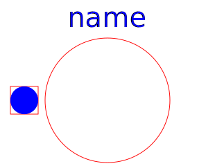

This package contains different types of sources:
Thermodynamic equations are defined in partial models (package BaseClasses). All fans / pumps are considered without losses, they do not change enthalpy flow.
| Name | Description |
|---|---|
| Ambient with constant properties | |
|  AbsolutePressure | Defines absolute pressure level |
| Enforces constant volume flow | |
| Enforces constant pressure increase | |
| Model of an ideal pump |